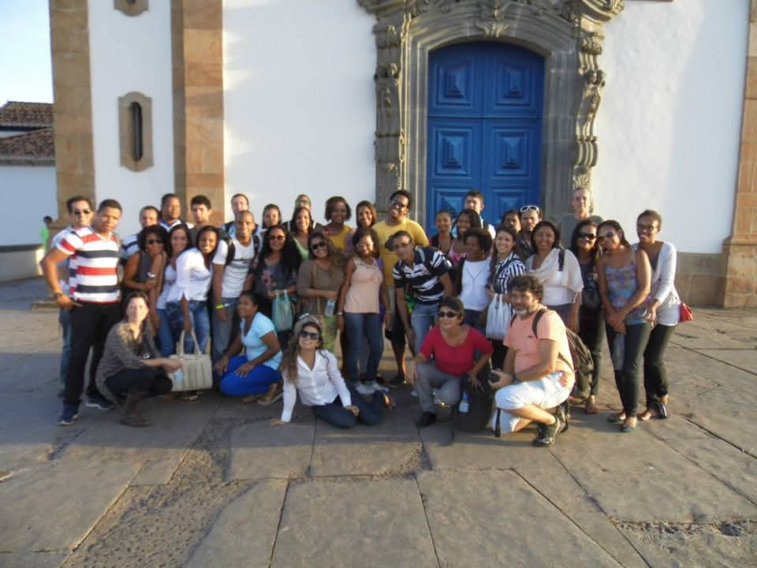
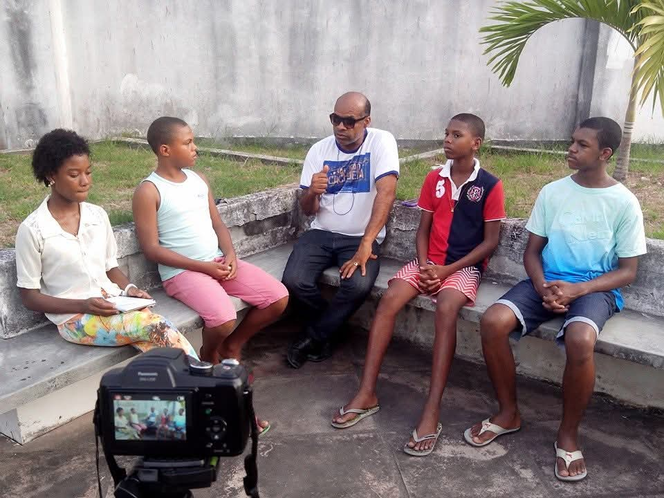
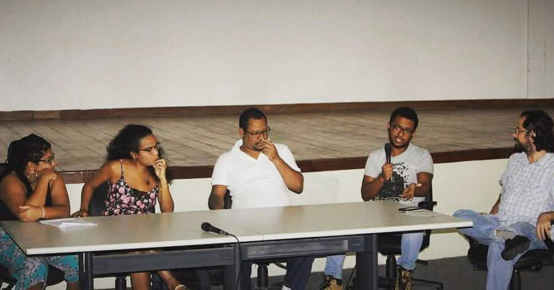
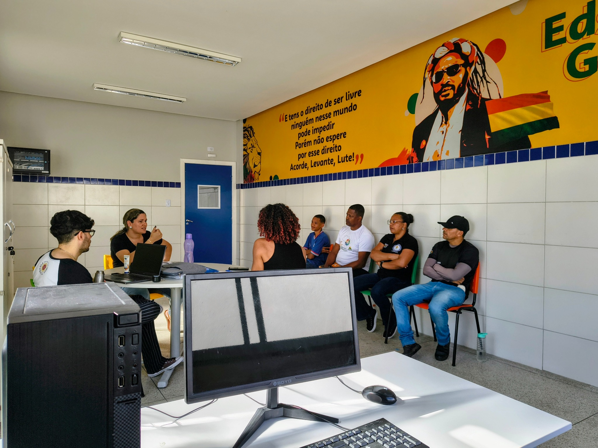
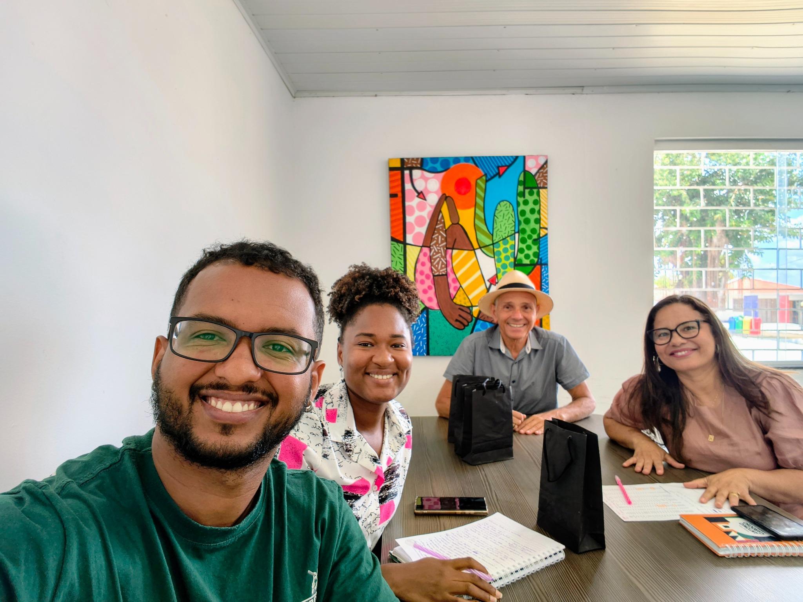
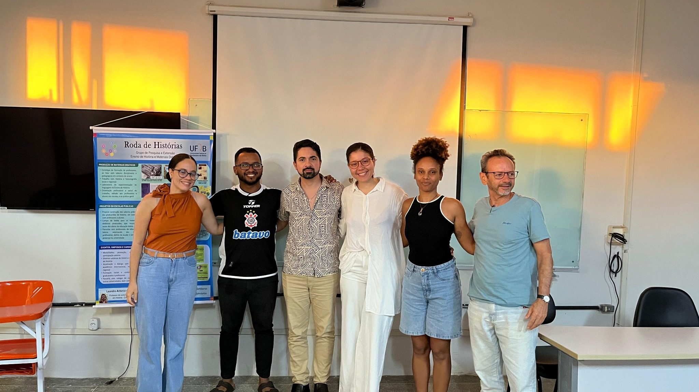
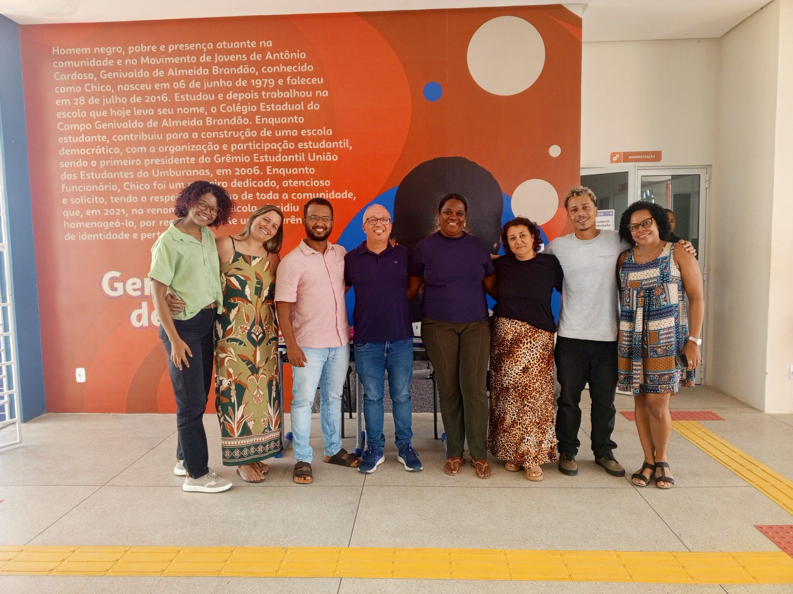

2014 · Ouro Preto
Atividade de campo
Visitas técnicas dos cursos de História e Museologia a museus, igrejas e circuitos históricos de Ouro Preto, Minas Gerais.
Trajetória de egresso
Da graduação e do PIBID à docência e à gestão escolar.
2010.2–2016.1
Sandro Augusto da Silva Cerqueira Junior ingressou no Curso de História da UFRB em 2010.2 e concluiu a graduação em 2016.1. As fotografias enviadas ao Memorial registram atividades de campo, experiências vinculadas ao PIBID História e participação na vida acadêmica do CAHL.
Atualmente mora em Feira de Santana e trabalha em Antônio Cardoso. É professor efetivo da rede estadual da Bahia e, no momento, atua como diretor escolar.
Memórias do curso

Visitas técnicas dos cursos de História e Museologia a museus, igrejas e circuitos históricos de Ouro Preto, Minas Gerais.

Registro na Fundação Hansen Bahia durante entrevistas sobre o cemitério dos pretos no Rosarinho. A atividade posteriormente resultou em apresentação de trabalho acadêmico no Paraná.

Participação em mesa de discussão de evento local do Curso de História, realizada no auditório do CAHL.
Depois da UFRB

Participação em reunião de colegiado escolar vinculada à Secretaria da Educação do Estado da Bahia.

Participação em reunião da comissão da Feira Literária de Antônio Cardoso, vinculada à Prefeitura Municipal.

Mediação de grupo de discussão em atividade da Associação Nacional de História — Seção Bahia.
Você hoje

Sandro informa que é professor efetivo da rede estadual da Bahia e atualmente exerce a função de diretor do Colégio Estadual do Campo de Tempo Integral Genivaldo de Almeida Brandão, em Antônio Cardoso.